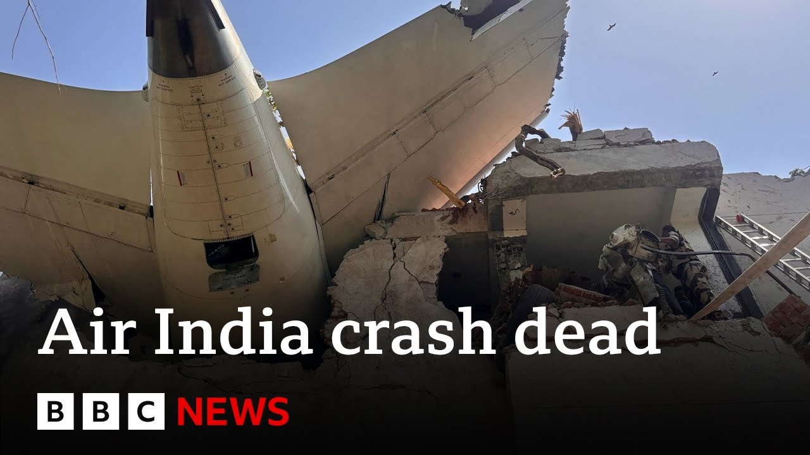

【印度航空确认艾哈迈达巴德空难致241人遇难，仅1人幸存 | BBC新闻】
Summary: An Air India plane bound for London crashed shortly after takeoff from Ahmedabad, killing 241 people with one survivor. The aircraft hit a medical college hostel, causing devastation in a residential area. Firefighters found severe damage and signs of intense fire. The sole survivor, a 40-year-old man, walked away from the crash. Investigations suggest potential issues with landing gear and flaps, while Boeing and global teams assist in the probe.
摘要： 一架印度航空飞往伦敦的航班在艾哈迈达巴德起飞后不久坠毁，造成241人遇难，仅1人幸存。飞机撞上一所医学院宿舍，导致居民区严重损毁。消防员发现建筑物严重受损并有猛烈火灾迹象。唯一幸存者是一名40岁男子，自行逃离现场。调查显示可能存在起落架和襟翼问题，波音及国际团队协助调查。

⏱️ Estimated Reading Time: 13 min
📚 六级生词 📚 雅思生词 📚 托福生词 📚 专八生词 📚 SAT生词 📚 考研生词 📚 GRE生词 📚 高考生词
Let's get more now on our main news and the crash of that AirIndia plane banned for London seconds after it took off from the Indian city of Ahmedabad.
现在让我们详细了解头条新闻：印度航空一架飞往伦敦的航班在艾哈迈达巴德起飞后数秒坠毁。
Air India has now confirmed that of the 242 people on board, there's been only a single survivor.
印度航空现已确认机上242人中仅有一名幸存者。
It's not yet known how many people were killed on the ground as the aircraft came down on a medical college hostel.
飞机坠毁于一所医学院宿舍，地面伤亡人数尚不明确。
Well, the crash of the Air India jet has led to huge devastation in a residential area of Ahmedabad.
此次印度航空坠机事件导致艾哈迈达巴德居民区遭受巨大破坏。
Firefighters were at the scene not long after the crash, but there was huge damage to a mid-rise building with signs of intense fire.
消防员很快抵达现场，但一栋中层建筑严重损毁并有猛烈火灾痕迹。
The aircraft was due to fly long haul to London and it was likely to been carrying a significant amount of fuel when it came down.
该航班原定长途飞往伦敦，坠毁时可能携带大量燃油。
India's Minister of Home Affairs spoke a short time ago after meeting the sole survivor of the crash.
印度内政部长稍早会见了唯一幸存者并发表讲话。
Well, this was 40-year-old Vish Kumar Romesh whose family live in Leicester and he apparently walked off the plane.
这名40岁幸存者名为维什·库马尔·罗梅什，家住莱斯特，据称自行离开了飞机。
He was sitting near the front of the aircraft and has now been in hospital.
他当时坐在飞机前部，目前正在医院接受治疗。
Let's hear from the home minister Amit Sha who met him altogether.
让我们听听内政部长阿米特·沙会见后的发言。
230 passengers, national and international citizens and 12 crew members were on board.
机上共有230名国内外乘客和12名机组人员。
We have had news of one person among them surviving.
我们获悉其中一人幸存。
I have gone to meet that person.
我已前往会见这名幸存者。
We will give the official death toll after the DNA is taken and their identities have been confirmed by the authorities.
待DNA采集完成且身份经官方确认后，我们将公布正式死亡人数。
But I have gone to see the survivor Sha speaking earlier.
但内政部长沙早些时候已探望了幸存者。
Well, let's go live to Delhi and speak to aerospace journalist Nam Matthews.
现在让我们连线德里的航空记者纳姆·马修斯。
Thanks for being with us.
感谢您的参与。
It it is early and the investigation is obviously just starting into this terrible crash.
目前调查刚刚开始，尚处早期阶段。
But what can we um deduce from what we know as to the potential causes of this horrible accident?
根据现有信息，我们能推断出哪些可能导致这场悲剧的原因？
While it's too early to talk about causes, there were certain issues that were quite apparent.
虽然谈论原因为时尚早，但某些问题已相当明显。
One thing was the landing gear remained extended and that creates excess drag which can low lead to a lower climb rate and stall rest making altitude recovery a bit difficult.
其一起落架未收起导致过大阻力，可能降低爬升率并引发失速，使高度恢复困难。
Also one of uh the pilots who was on ground noticed the flap configurations were at 0° where they should have been between 5 to 10°.
此外，地面一名飞行员注意到襟翼角度为0°，而正常应在5°至10°之间。
Now at 37° centigrade temperature in Ahmedabad and uh a full fuel load this would result in the aircraft unable to climb and we had bird sorry we could have mult bird strikes that could have caused engine failure but it's all left to be seen and is it likely that the uh blackbox recorders will be found even though we saw that huge fireball.
艾哈迈达巴德37℃高温加上满载燃油可能导致飞机无法爬升，此外还可能遭遇鸟击引发引擎故障，但尚待证实。尽管火势猛烈，黑匣子仍有望找到吗？
Uh God willing they will be found given that uh they are made for very kind of uh strict they are really welld designed.
若情况允许应该能找到，因其设计非常坚固。
So they generally do enco encompass fire etc.
通常能抵御火灾等破坏。
But we'll have to see till they are found.
但需待寻获后才能确认。
It seemed pretty charred what we saw on television.
电视画面显示残骸烧焦严重。
and and what is known about the uh safety record of Air India because it was taken over obviously in the last few years by the Tatar group.
印度航空近年被塔塔集团收购，其安全记录如何？
Yeah. uh since the Tata group has taken over this has been the first uh accident and uh the first unfortunately of the 787 globally and in 2020 Air India had an accident where about 23 people had died and uh so it's basically in a decade we've seen two accidents and and what about the record of this particular type of Boeing Uh this uh this Boeing 787 has a pretty good uh record.
塔塔接手后这是首起事故，也是全球787机型首次空难。2020年印度航空事故致23人遇难，即十年内共两起。这款波音787整体安全记录良好。
Um it's the first accident to happen in air and once it had happened on land uh which brought about the issue of the lithium batteries which were causing the fires which they have tried to fix.
这是其首次空中事故，此前地面事故因锂电池起火引发，后已修复。
And when we look at um sort of air airport safety and and flying safety in India generally how do you describe it?
总体而言，您如何评价印度的航空安全状况？
Because obviously India is a vast country.
毕竟印度幅员辽阔。
People perhaps don't realize it's the size of Western Europe and people fly a lot.
其面积相当于西欧，航空运输需求旺盛。
That airport I mean the bud is is very very popular.
该机场极其繁忙。
It's it's heavily used isn't it?
使用频率非常高对吧？
Uh India uh shouldn't say surprisingly because the fleet size has been pretty small in all these years.
印度（安全记录）不算差，因机队规模多年来较小。
Now it's like accelerate accelerating to the point of no return.
如今发展已势不可挡。
Uh we do have a good safety record and uh unfortunately now we'll have to start addressing issues safety concern issues.
我们原有良好安全记录，现在必须着手解决安全隐患。
And just finally we we've seen that we've seen the the incredible um images of of one man who was able to survive this crash.
最后，我们看到这名幸存者的惊人画面。
Um, is is it possible to work out how one person could have walked out of this?
能否推测他如何生还？
I can just say God had a special place in his heart for him.
只能说上天特别眷顾他。
It was good karma and he probably realized just on time that things were going wrong and he was sitting near the emergency uh door and he wrenched it open and took a chance and just jumped out.
善报使然，他可能及时察觉异常，坐在应急门附近并强行打开跳机。
So, he was lucky.
实属幸运。
We don't know obviously the details but uh perhaps we will hear his account.
具体细节尚不清楚，或许后续会听到他的叙述。
His brother was also on board.
其兄弟也在机上。
So it's a very difficult day for his family and so many others uh in India and uh in the UK and around the world watching the events of the day.
对其家人及全球关注者而言都是艰难的一天。
Neil Matthews, thank you very much for being with us.
尼尔·马修斯，非常感谢。
Well, what more do we know about the plane involved?
关于涉事飞机还有哪些信息？
The aircraft that crashed, just to remind you, is a Boeing 7878 Dreamliner.
失事飞机为波音787梦幻客机。
The model was launched by the US manufacturer 14 years ago and started flying with Air India in 2014 with 256 seats available on board.
该机型14年前由波音推出，2014年加入印度航空机队，设256个座位。
This is the first time it's been involved in a crash like this.
这是该机型首次此类空难。
Just six weeks ago, manufacturers Boeing celebrated the crafts carrying 1 billion passengers globally.
六周前波音刚庆祝该机型全球运载10亿乘客。
Air India operates a fleet of more than 190 planes, 58 of them are Boeing aircraft, 34 of which are believed to be Dreamlininers.
印度航空运营190余架飞机，其中58架为波音，34架为787。
This is uh library footage of the same plane that crashed today from 20 2016.
这是2016年同架飞机的资料画面。
In a statement, Boeing CEO said, "Our deepest condolences go out to the loved ones of the passengers and crew on board Air India flight 171 as well as everyone affected in Amadabad.
波音CEO声明："向印度航空171航班遇难者家属及艾哈迈达巴德民众致以深切哀悼。
I've spoken with Air India's chairman to offer our full support and a Boeing team stands ready to support the investigation led by India's aircraft accident investigation bureau."
我已与印航董事长通话提供全力支持，波音团队随时配合印度空难调查局。"
Well, US and British investigators are also traveling to India to help the investigation into the crash with specialists from across the world expected to assist.
美英调查人员正赴印协助，全球专家将参与调查。
Let's speak to our North America business correspondent Michelle Flurry.
现在连线北美商业记者米歇尔·弗勒里。
Michelle, we we've talked a lot about Boeing uh over recent months and and years in fact.
米歇尔，我们近年多次讨论波音。
Um was there any sort of market reaction to what's happened today?
今日事件引发市场反应了吗？
Yeah, I mean we saw initially when news started to emerge in pre-market trading there was a sharp drop in the share price of both uh Boeing and General Electric which makes the engines used in the 787 Dreamliner.
盘前交易中波音和GE（787引擎制造商）股价骤跌。
Um since then they've sort of recovered slightly.
随后略有回升。
General Electric shares down around 2% and Boeing shares around 5%.
GE股价跌约2%，波音跌5%。
I mean, I think part of the concern is this is sort of a natural reaction you would expect to see to to a tragic event like this um from Wall Street, but also I think it's puts the spotlight back on the company for safety issues because of course it has been recovering um from from several incidents over the last couple of years.
华尔街对此类事件的常规反应，但这也使波音安全问题再次受关注——其正从近年多起事故中恢复。
Uh and the airline was seen to have made quite a lot of progress.
该公司已取得显著进展。
Uh but obviously now this will be a setback.
显然这会是个挫折。
Yeah. And obviously this is this is a different model to to the to the previous ones involved in um previous crashes.
此次涉事机型与以往空难不同。
But how much will US investigators now get involved?
美方调查将多深入？
Because we've heard that US and UK uh teams will go to India and will get involved.
美英团队将赴印参与。
It will be a global investigation to a degree led by India.
这将是以印度为主导的国际调查。
Yeah. Yeah, I mean so there is a protocol here and the investigation will be led by Indian authorities by the government of India but the NTSB here in America uh is sending a team of investigators over.
按规程由印度政府主导，但美国NTSB将派遣团队。
Now that team could include uh even people from Boeing itself.
团队可能包含波音人员。
Boeing has said they were ready to lend whatever assistance was needed.
波音表示愿提供一切协助。
um you know, they're going to need people who can who have experience not just of of crash scenes, complicated crash scenes, but also uh you know, for studying when they eventually recover uh the flight data recorder and the cockpit voice recorder, they're going to want, you know, people who can understand what information that reveals.
需既有空难现场经验又能分析黑匣子数据的专家。
They're going to need people who understand the 787 in great detail to try and figure out.
还需精通787机型的人员协助研判。
I mean, there are a lot of questions.
目前存在诸多疑问。
speaking to people today they say look this could be an issue related to poor maintenance it could be a mechanical issue it could be human error uh there are a lot of variables uh and I think it's going to be certainly weeks before we get any answers and for so for now there are simply sort of more questions and I think that's why you're going to have so many people involved in this investigation um but but they will take time to kind of find out exactly what happened here.
可能涉及维护不足、机械故障或人为失误，需数周才有答案，故需多方参与调查。